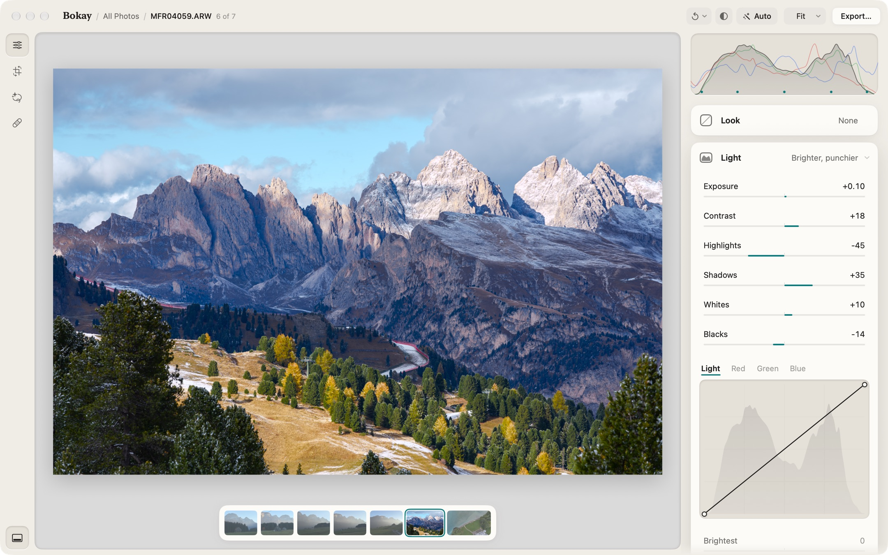

Edit like a pro.
Pay once.
Bokay is the raw photo editor for the Mac that moves with your hand. Point at the sky to change only the sky, paint out whatever doesn't belong, and keep it for good: no subscription, no account, no cloud.
Coming to the Mac App Store
One purchase. Every feature. Yours to keep.

Point at it, change it
Point at the sky, a face or a mountain and Bokay outlines it. Click, and every change touches only that.
Gone in one stroke
Paint over people, wires or litter and an AI model on your Mac draws what was behind them. Offline, private, free.
No import, no catalog
Your photos stay where they are, on your Mac, a drive or your NAS. Your originals are never changed.
Learn it as you go
Rest the pointer on anything and a hint says what it does. Once you've used it, the hint retires.